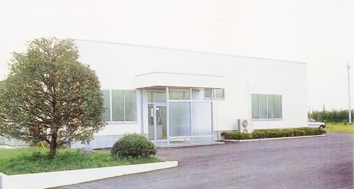

加工内容
お客様のご要望の抜き加工をお引き受けします。 シール抜き、各種抜き加工、連続シール抜き機械貼対応加工に対応します。
-
貼り合わせ（ラミネート）
両面テープと各種フィルム材を貼り合わせます。ラミネーターを 500mm巾・250mm巾・100mm巾・50mm巾の4台そろえているので、 材料の幅に合わせて選べます。
-
スリット
巻き戻しスリッターと突切スリッターの2台で、必要な幅に切り出します。
-
抜き加工
ビク型による型抜きと、5t〜60tのプレスによる打抜き。 最大500mm×300mmまで抜けます。エンドレス機は500mm巾の ロール材をそのままセットできます。
-
仕上げ
研磨機2台で仕上げます。連続シールの機械貼りにも対応しています。
用途
ここで抜いた部品が入っている製品です。
- 液晶ディスプレイLCD向け電子部品
- 半導体デバイス半導体用の精密抜き部品
- 電子カメラカメラ用電子部品
- 複写機複写機用電子部品
- OA機器事務機器全般
- 携帯情報端末機器モバイル機器向け
- コンピュータ関連精密機械PC周辺の精密部品
設備
プレスは5トンから60トンまで12台。小さい部品を数多く抜く仕事に向いた構成です。
バーの長さはトン数の比を表しています。
| 設備 | 仕様 | 台数 |
|---|---|---|
| ラミネーター | 500mm巾／250mm巾／100mm巾／50mm巾 | 4 |
| スリッター | 巻き戻しスリッター／突切スリッター | 2 |
| 研磨機 | — | 2 |
| プレス 60トン | — | 1 |
| プレス 25トン | — | 3 |
| プレス 15トン | 高速 | 4 |
| プレス 5トン | — | 4 |
| 型抜き | ビク型専用 500mm × 300mm MAX | 3 |
| 型抜き（エンドレス） | ビク型専用 500mm巾ロール材セット可／抜きサイズ 500mm × 300mm MAX | 1 |

会社概要
- 商号
- 栃木エーエルシー株式会社
- 創立
- 平成11年10月1日（1999年）
- 所在地
- 〒329-1206
栃木県塩谷郡高根沢町大字平田高堀1064-1番地 - 電話
- 028-676-1141（代表）
FAX 028-676-1142 - 敷地
- 10,000㎡
- 建坪
- 660㎡
- 事業目的
-
1. シール、ラベル、プラスチックフィルム・シート、マスキングテープ、
延着テープ等の加工、販売
2. 精密部品のシール抜き、打抜き加工 - 会社特徴
- 紙、フィルム、金属箔等の複合材の抜き加工。特に半導体、LCD、電子カメラ、 複写機用電子部品の加工。
よくあるご質問
どのような材料を抜けますか？
紙、フィルム、金属箔等の複合材の抜き加工を行っています。シール、ラベル、 プラスチックフィルム・シート、マスキングテープ、延着テープなどが対象です。 両面テープおよび各種フィルム材の貼り合わせ品にも対応しています。
どのくらいの大きさまで抜けますか？
ビク型専用の型抜き機で最大500mm×300mmまで対応します。エンドレスタイプは 500mm巾のロール材をセットでき、抜きサイズは同じく最大500mm×300mmです。
貼り合わせから抜きまで一貫で頼めますか？
はい。ラミネーターを4台（500mm巾、250mm巾、100mm巾、50mm巾）保有しており、 貼り合わせから抜き加工まで社内で行えます。スリッター2台による巻き戻し・ 突切のスリット加工にも対応します。
どのような製品に使われていますか？
液晶ディスプレイ、半導体デバイス、OA機器、携帯情報端末機器、 コンピュータ関連精密機械に使われる部品を手がけています。特に半導体、LCD、 電子カメラ、複写機用の電子部品加工を得意としています。
連続シールの機械貼りには対応していますか？
対応しています。連続シール抜き機械貼対応加工としてお引き受けしています。
お問い合わせ
材料・寸法・数量をお知らせいただければ、可否をお答えします。 まずはお電話ください。
FAX 028-676-1142